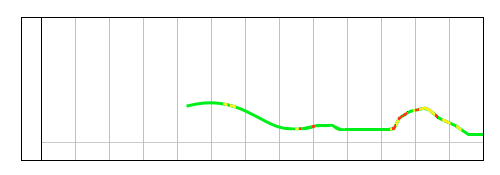

Отчет за 7 Марта
===
Задания:
Юнит-тесты для Вэб Персонал:
cContactBook - покрытие 86%
cEmployee - покрытие 100%
cDepartmentContacts - покрытие 62%
---
Тесты для баг-репортов:
BR#1298 [Ошибка отображения статистики] - Не смог воспроизвести
BR#1306 [Нарушение прав доступа к статистике] - Тест сделан
BR#1308 [Ошибка в окне выборки статистики] - Тест сделан, нужно добавить в JS для тестирования всех возможных кейсов
BR#1349 [Не отображается информация в профиле] - Не смог воспроизвести
BR#1351 [Долгая загрузка профиля] - Добавил метрику
===
Персональный проект:
Изменил отображение графика статуса:
Высота линии отражает частоту событий, важность отражается цветом.
